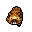
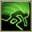
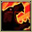
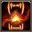
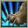
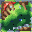
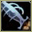
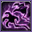
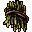
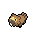

Pokédex / #399
Bidoof #399
Normal
A comparison revealed that BIDOOF’s front teeth grow at the same rate as RATTATA’s.
Generation 4 · Sinnoh

Stats
| Attack | 45 | |
|---|---|---|
| Defense | 40 | |
| Sp. Atk | 35 | |
| Sp. Def | 40 |
In the wild
| Wild level | 20–30 |
|---|---|
| HP | 59 |
| Experience | 5 |
| Egg groups | Water 1, Field |
Evolution
- Evolves into Bibarel at level 15.
Moves
| Level | Move | Type | Category | Power | Energy | Cooldown | Effect | |
|---|---|---|---|---|---|---|---|---|
| 1 | Tackle | Normal | Physical | 15 | 15 | 1s | Tackle is one of the most common and basic moves a Pokemon learns. It deals damage with no additional effects. | |
| 1 | Growl | Normal | Status | – | 60 | 60s | The user growls in a cute way, making the foe lower its ATTACK. stat. | |
| 5 | Defense Curl | Normal | Status | – | 60 | 60s | Defense Curl raises the user's Defense by two stages. | |
| 9 | Rollout | Rock | Physical | 5 | 70 | 35s | Rollout inflicts damage over five turns and raises the user's Speed by two stages. | |
| 13 |  | Headbutt | Normal | Physical | 70 | 70 | 11s | Headbutt deals damage and has a 30% chance of causing the target to flinch. |
| 17 |  | Hyper Fang | Normal | Physical | 80 | 80 | 12s | Hyper Fang deals damage and has a 10% chance of causing the target to flinch. |
| 21 | Yawn | Normal | Status | – | 100 | 95s | In the turn that Yawn is used, the only effect will be the user yawning at the target. At the end of the next turn, the target (if still active) will fall asleep unless it gets affected by a major status condition in the meantime, a status-protecting move is used (like Safeguard or Uproar), or the battle ends. | |
| 25 |  | Crunch | Dark | Physical | 80 | 80 | 12s | Crunch deals damage and has a 20% chance of lowering the target's Defense by one stage. |
| 29 |  | Take Down | Normal | Physical | 90 | 90 | 14s | Take Down deals damage and has no secondary effect. |
| 33 |  | Super Fang | Normal | Physical | 100 | 100 | 15s | Super Fang does damage and has no secondary effect. |
| 37 |  | Swords Dance | Normal | Status | – | 100 | 60s | Swords Dance raises the user's Attack by two stages. |
| 41 | Amnesia | Psychic | Status | – | 75 | 60s | Amnesia raises the user's Special Defense by two stages. | |
| 45 | Superpower | Fighting | Physical | 120 | 120 | 20s | Superpower deals damage but lowers the user's Attack and Defense by one stage each after attacking. | |
| 49 |  | Curse | Ghost | Status | 50 | 100 | 60s | Curse is a unique move that works differently for Ghost-type Pokemon than other Pokemon. Ghost-type Pokemon use 50% of their current HP to place a curse on the target. The cursed Pokemon loses hp during 5 turns. For all other Pokemon, Curse raises the user's Attack and Defense by one stage each and lowers Speed by one stage. |
Field abilities
CutRock SmashHeadbuttDig
Special abilities
Simple
Egg moves
Aqua TailDefense CurlDouble-EdgeEndureFury SwipesMud SportQuick AttackRock ClimbRolloutSkull BashSleep TalkWater Sport
Technical machines
BlizzardDouble TeamFacadeHidden PowerIce BeamIron TailProtectRain DanceRestSecret PowerShadow BallShock WaveSubstituteThunderThunder WaveThunderboltToxic
Drops
| Item | Amount | Chance | |
|---|---|---|---|
| bunch of wheat | 1 | 80% | |
 | bunch of sugar cane | 1 | 32% |
| feather | 1 | 17.8% | |
| downy feather | 1 | 8% | |
| colourful feather | 1 | 3.2% | |
 | bidoof doll | 1 | 0.1% |
| Love Plate | 1 | 0.002% | |
| Sky Plate | 1 | 0.002% |